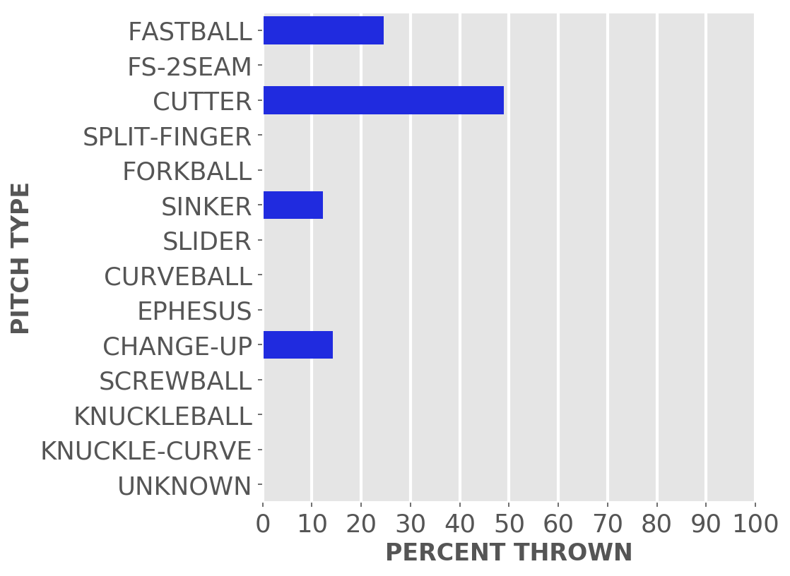
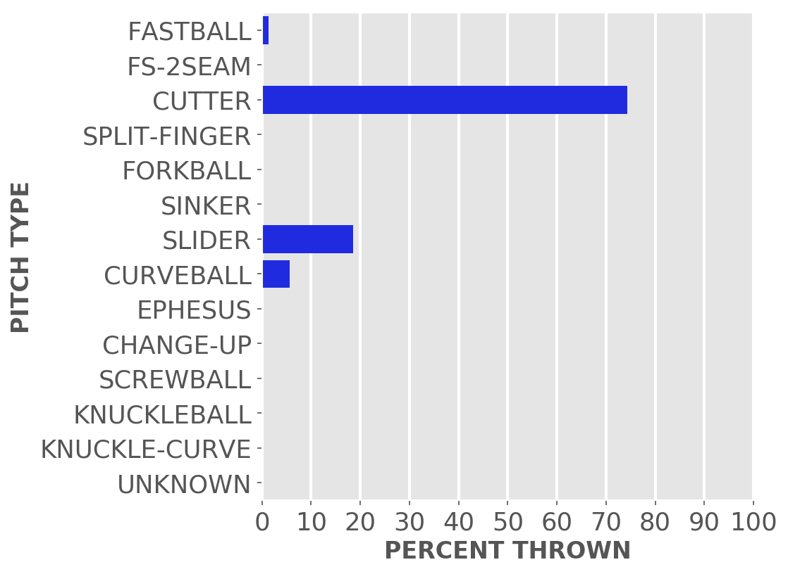

Chicago baseball
Cubs
A little-more-than-casual but not-very-wonky statistical look at the current season
Just enough stats to feed into the anxieties of your typical Cubby fan.
Updated Sunday, April 17, at 10:55 a.m. Pybaseball gathers these from Baseball-reference.com.
Games
JUMP TO TOP | BATTERS | PITCHERS
On Saturday, Apr 16, the Cubs lost a night game at the Rockies, 6 to 9, in 9 innings. The winning pitcher was Senzatela, losing pitcher was Leiter. Save: Bard.
Next scheduled game: Sunday, Apr 17, an away game at the Rockies.
Summary results by team
| Team | Wins | Loses | Avg. Cubs runs | Avg. runs against |
|---|---|---|---|---|
| Brewers | 2 | 1 | 6.0 | 3.0 |
| Pirates | 1 | 1 | 2.0 | 3.5 |
| Rockies | 1 | 2 | 5.33 | 5.67 |
Batters
JUMP TO TOP | GAMES | PITCHERS
Click the link under a player's name to get up-to-speed on a player at bat.
Willson Contreras #40, C
| Status (A = active) | A |
| Bats/Throws | R/R |
| Plate appearances | 27 |
| At bats | 23 |
| Hits | 7 |
| Home runs | 1 |
| Batting Avg. | 0.304 |

| Runs | 6 |
| RBI | 2 |
| On-base percent | 0.407 |
| Weighted OBP | 0.426 |
| Slugging % | 0.565 |
| Stolen bases | 0 |
| Caught stealing | 0 |
Other measures
| Weighted runs above avg. (wRAA) | 2.4 |
| Runs Above Replacement (RAR) | 4.6 |
| Fielding RAR | 1.0 |
| Wins above replacement (WAR) | 0.5 |
Clint Frazier #77, LF
| Status (A = active) | A |
| Bats/Throws | R/R |
| Plate appearances | 16 |
| At bats | 14 |
| Hits | 2 |
| Home runs | 0 |
| Batting Avg. | 0.143 |
| Runs | 2 |
| RBI | 0 |
| On-base percent | 0.25 |
| Weighted OBP | 0.247 |
| Slugging % | 0.286 |
| Stolen bases | 0 |
| Caught stealing | 0 |
Other measures
| Weighted runs above avg. (wRAA) | -0.8 |
| Runs Above Replacement (RAR) | -0.9 |
| Fielding RAR | |
| Wins above replacement (WAR) | -0.1 |
Yan Gomes #7, C
| Status (A = active) | A |
| Bats/Throws | R/R |
| Plate appearances | 8 |
| At bats | 8 |
| Hits | 3 |
| Home runs | 0 |
| Batting Avg. | 0.375 |

| Runs | 1 |
| RBI | 0 |
| On-base percent | 0.375 |
| Weighted OBP | 0.432 |
| Slugging % | 0.625 |
| Stolen bases | 0 |
| Caught stealing | 0 |
Other measures
| Weighted runs above avg. (wRAA) | 0.8 |
| Runs Above Replacement (RAR) | 1.1 |
| Fielding RAR | 0.0 |
| Wins above replacement (WAR) | 0.1 |
Ian Happ #8, CF
| Status (A = active) | A |
| Bats/Throws | S/R |
| Plate appearances | 29 |
| At bats | 25 |
| Hits | 9 |
| Home runs | 0 |
| Batting Avg. | 0.36 |

| Runs | 3 |
| RBI | 5 |
| On-base percent | 0.448 |
| Weighted OBP | 0.401 |
| Slugging % | 0.44 |
| Stolen bases | 0 |
| Caught stealing | 0 |
Other measures
| Weighted runs above avg. (wRAA) | 2.1 |
| Runs Above Replacement (RAR) | 2.5 |
| Fielding RAR | |
| Wins above replacement (WAR) | 0.3 |
Michael Hermosillo #32, OF
| Status (A = active) | A |
| Bats/Throws | R/R |
| Plate appearances | 11 |
| At bats | 7 |
| Hits | 0 |
| Home runs | 0 |
| Batting Avg. | 0.0 |

| Runs | 0 |
| RBI | 0 |
| On-base percent | 0.364 |
| Weighted OBP | 0.255 |
| Slugging % | 0.0 |
| Stolen bases | 0 |
| Caught stealing | 0 |
Other measures
| Weighted runs above avg. (wRAA) | -0.5 |
| Runs Above Replacement (RAR) | -0.1 |
| Fielding RAR | |
| Wins above replacement (WAR) | 0.0 |
Jason Heyward #22, RF
| Status (A = active) | A |
| Bats/Throws | L/L |
| Plate appearances | 20 |
| At bats | 18 |
| Hits | 6 |
| Home runs | 0 |
| Batting Avg. | 0.333 |

| Runs | 3 |
| RBI | 1 |
| On-base percent | 0.4 |
| Weighted OBP | 0.374 |
| Slugging % | 0.444 |
| Stolen bases | 0 |
| Caught stealing | 0 |
Other measures
| Weighted runs above avg. (wRAA) | 1.0 |
| Runs Above Replacement (RAR) | 1.6 |
| Fielding RAR | |
| Wins above replacement (WAR) | 0.2 |
Nico Hoerner #2, 2B
| Status (A = active) | A |
| Bats/Throws | R/R |
| Plate appearances | 25 |
| At bats | 25 |
| Hits | 5 |
| Home runs | 1 |
| Batting Avg. | 0.2 |

| Runs | 2 |
| RBI | 2 |
| On-base percent | 0.2 |
| Weighted OBP | 0.228 |
| Slugging % | 0.32 |
| Stolen bases | 1 |
| Caught stealing | 0 |
Other measures
| Weighted runs above avg. (wRAA) | -1.6 |
| Runs Above Replacement (RAR) | -0.4 |
| Fielding RAR | |
| Wins above replacement (WAR) | 0.0 |
Nick Madrigal #1, 2B
| Status (A = active) | A |
| Bats/Throws | R/R |
| Plate appearances | 26 |
| At bats | 23 |
| Hits | 4 |
| Home runs | 0 |
| Batting Avg. | 0.174 |

| Runs | 3 |
| RBI | 0 |
| On-base percent | 0.269 |
| Weighted OBP | 0.234 |
| Slugging % | 0.217 |
| Stolen bases | 0 |
| Caught stealing | 0 |
Other measures
| Weighted runs above avg. (wRAA) | -1.5 |
| Runs Above Replacement (RAR) | -0.7 |
| Fielding RAR | |
| Wins above replacement (WAR) | -0.1 |
Rafael Ortega #66, RF
| Status (A = active) | A |
| Bats/Throws | L/R |
| Plate appearances | 24 |
| At bats | 18 |
| Hits | 2 |
| Home runs | 0 |
| Batting Avg. | 0.111 |

| Runs | 2 |
| RBI | 1 |
| On-base percent | 0.304 |
| Weighted OBP | 0.245 |
| Slugging % | 0.167 |
| Stolen bases | 0 |
| Caught stealing | 2 |
Other measures
| Weighted runs above avg. (wRAA) | -1.2 |
| Runs Above Replacement (RAR) | -1.8 |
| Fielding RAR | |
| Wins above replacement (WAR) | -0.2 |
Frank Schwindel #18, 1B
| Status (A = active) | A |
| Bats/Throws | R/R |
| Plate appearances | 32 |
| At bats | 30 |
| Hits | 8 |
| Home runs | 1 |
| Batting Avg. | 0.267 |

| Runs | 3 |
| RBI | 3 |
| On-base percent | 0.313 |
| Weighted OBP | 0.317 |
| Slugging % | 0.4 |
| Stolen bases | 0 |
| Caught stealing | 0 |
Other measures
| Weighted runs above avg. (wRAA) | 0.2 |
| Runs Above Replacement (RAR) | 0.5 |
| Fielding RAR | |
| Wins above replacement (WAR) | 0.0 |
Seiya Suzuki #27, OF
| Status (A = active) | A |
| Bats/Throws | R/R |
| Plate appearances | 30 |
| At bats | 22 |
| Hits | 9 |
| Home runs | 3 |
| Batting Avg. | 0.409 |

| Runs | 6 |
| RBI | 10 |
| On-base percent | 0.533 |
| Weighted OBP | 0.575 |
| Slugging % | 0.909 |
| Stolen bases | 0 |
| Caught stealing | 0 |
Other measures
| Weighted runs above avg. (wRAA) | 6.2 |
| Runs Above Replacement (RAR) | 6.6 |
| Fielding RAR | |
| Wins above replacement (WAR) | 0.7 |
Jonathan Villar #24, 3B
| Status (A = active) | A |
| Bats/Throws | S/R |
| Plate appearances | 22 |
| At bats | 19 |
| Hits | 9 |
| Home runs | 0 |
| Batting Avg. | 0.474 |
| Runs | 4 |
| RBI | 4 |
| On-base percent | 0.5 |
| Weighted OBP | 0.464 |
| Slugging % | 0.579 |
| Stolen bases | 0 |
| Caught stealing | 0 |
Other measures
| Weighted runs above avg. (wRAA) | 2.6 |
| Runs Above Replacement (RAR) | 3.3 |
| Fielding RAR | |
| Wins above replacement (WAR) | 0.4 |
Patrick Wisdom #16, 3B
| Status (A = active) | A |
| Bats/Throws | R/R |
| Plate appearances | 29 |
| At bats | 27 |
| Hits | 6 |
| Home runs | 0 |
| Batting Avg. | 0.222 |

| Runs | 2 |
| RBI | 6 |
| On-base percent | 0.241 |
| Weighted OBP | 0.262 |
| Slugging % | 0.37 |
| Stolen bases | 0 |
| Caught stealing | 1 |
Other measures
| Weighted runs above avg. (wRAA) | -1.1 |
| Runs Above Replacement (RAR) | -0.6 |
| Fielding RAR | |
| Wins above replacement (WAR) | -0.1 |
Pitchers
Click the link under a player's name to get acquainted with who's on the mound.Click here for a description of these stats and more.
Jesse Chavez #43, P
| Status (A = active) | A |
| Bats/Throws | R/R |
| Wins | 0 |
| Losses | 0 |
| ERA | 10.8 |
| Caught stealing | 0 |
| Complete games | 0 |
| Shutouts | 0 |
| Saves | 0 |
| Blown saves | 1 |
Pitch types
Fastball = Four Seam and Unclassified Fastballs; FS-2seam = Two Seam Fastballs; Ephesuses are a really slow ball
| Average innings pitched | 1.6 |
| Strikeouts per 9 innings | 2.7 |
| Walks per 9 innings | 2.7 |
| Walks, hits per inning (WHIP) | 2.1 |
| Percent left on base | 53.6 |
| Percent first pitch strike | 68.8 |
Other measures
| Avg. run support | 4.0 |
| Opponents batting average | 0.4 |
| Batting avg. on balls in play | 0.385 |
| Fielding independent pitching | 7.26 |
| Win probability added (WPA) | -0.43 |
| Runs above replacement | -1.2 |
| WAR | -0.1 |
Scott Effross #57, P
| Status (A = active) | A |
| Bats/Throws | R/R |
| Wins | 0 |
| Losses | 0 |
| ERA | 0.0 |
| Caught stealing | 0 |
| Complete games | 0 |
| Shutouts | 0 |
| Saves | 0 |
| Blown saves | 0 |
Pitch types

Fastball = Four Seam and Unclassified Fastballs; FS-2seam = Two Seam Fastballs; Ephesuses are a really slow ball
| Average innings pitched | 1.0 |
| Strikeouts per 9 innings | 15.0 |
| Walks per 9 innings | 0.0 |
| Walks, hits per inning (WHIP) | 0.33 |
| Percent left on base | 100.0 |
| Percent first pitch strike | 80.0 |
Other measures
| Avg. run support | 0.0 |
| Opponents batting average | 0.1 |
| Batting avg. on balls in play | 0.2 |
| Fielding independent pitching | -0.27 |
| Win probability added (WPA) | 0.06 |
| Runs above replacement | 0.8 |
| WAR | 0.1 |
Mychal Givens #60, P
| Status (A = active) | A |
| Bats/Throws | R/R |
| Wins | 1 |
| Losses | 0 |
| ERA | 2.7 |
| Caught stealing | 0 |
| Complete games | 0 |
| Shutouts | 0 |
| Saves | 1 |
| Blown saves | 0 |
Pitch types

Fastball = Four Seam and Unclassified Fastballs; FS-2seam = Two Seam Fastballs; Ephesuses are a really slow ball
| Average innings pitched | 0.8 |
| Strikeouts per 9 innings | 18.9 |
| Walks per 9 innings | 0.0 |
| Walks, hits per inning (WHIP) | 0.6 |
| Percent left on base | 100.0 |
| Percent first pitch strike | 66.7 |
Other measures
| Avg. run support | 0.0 |
| Opponents batting average | 0.167 |
| Batting avg. on balls in play | 0.25 |
| Fielding independent pitching | 2.76 |
| Win probability added (WPA) | 0.17 |
| Runs above replacement | 0.5 |
| WAR | 0.1 |
Kyle Hendricks #28, P
| Status (A = active) | A |
| Bats/Throws | R/R |
| Wins | 0 |
| Losses | 1 |
| ERA | 7.0 |
| Caught stealing | 2 |
| Complete games | 0 |
| Shutouts | 0 |
| Saves | 0 |
| Blown saves | 0 |
Pitch types

Fastball = Four Seam and Unclassified Fastballs; FS-2seam = Two Seam Fastballs; Ephesuses are a really slow ball
| Average innings pitched | 4.5 |
| Strikeouts per 9 innings | 11.0 |
| Walks per 9 innings | 7.0 |
| Walks, hits per inning (WHIP) | 2.11 |
| Percent left on base | 69.9 |
| Percent first pitch strike | 57.8 |
Other measures
| Avg. run support | 5.0 |
| Opponents batting average | 0.324 |
| Batting avg. on balls in play | 0.44 |
| Fielding independent pitching | 4.73 |
| Win probability added (WPA) | -0.29 |
| Runs above replacement | 0.1 |
| WAR | 0.0 |
Chris Martin #58, P
| Status (A = active) | A |
| Bats/Throws | R/R |
| Wins | 0 |
| Losses | 0 |
| ERA | 3.38 |
| Caught stealing | 0 |
| Complete games | 0 |
| Shutouts | 0 |
| Saves | 0 |
| Blown saves | 1 |
Pitch types

Fastball = Four Seam and Unclassified Fastballs; FS-2seam = Two Seam Fastballs; Ephesuses are a really slow ball
| Average innings pitched | 0.7 |
| Strikeouts per 9 innings | 13.5 |
| Walks per 9 innings | 3.38 |
| Walks, hits per inning (WHIP) | 2.25 |
| Percent left on base | 100.0 |
| Percent first pitch strike | 76.9 |
Other measures
| Avg. run support | 3.0 |
| Opponents batting average | 0.417 |
| Batting avg. on balls in play | 0.571 |
| Fielding independent pitching | 6.06 |
| Win probability added (WPA) | -0.12 |
| Runs above replacement | -1.0 |
| WAR | -0.1 |
Daniel Norris #49, P
| Status (A = active) | A |
| Bats/Throws | L/L |
| Wins | 0 |
| Losses | 1 |
| ERA | 7.36 |
| Caught stealing | 0 |
| Complete games | 0 |
| Shutouts | 0 |
| Saves | 0 |
| Blown saves | 0 |
Pitch types

Fastball = Four Seam and Unclassified Fastballs; FS-2seam = Two Seam Fastballs; Ephesuses are a really slow ball
| Average innings pitched | 1.1 |
| Strikeouts per 9 innings | 7.36 |
| Walks per 9 innings | 2.45 |
| Walks, hits per inning (WHIP) | 1.09 |
| Percent left on base | 38.5 |
| Percent first pitch strike | 71.4 |
Other measures
| Avg. run support | 2.0 |
| Opponents batting average | 0.231 |
| Batting avg. on balls in play | 0.222 |
| Fielding independent pitching | 5.79 |
| Win probability added (WPA) | -0.13 |
| Runs above replacement | -0.4 |
| WAR | 0.0 |
Ethan Roberts #21, P
| Status (A = active) | A |
| Bats/Throws | R/R |
| Wins | 0 |
| Losses | 0 |
| ERA | 2.7 |
| Caught stealing | 0 |
| Complete games | 0 |
| Shutouts | 0 |
| Saves | 0 |
| Blown saves | 0 |
Pitch types
Fastball = Four Seam and Unclassified Fastballs; FS-2seam = Two Seam Fastballs; Ephesuses are a really slow ball
| Average innings pitched | 0.8 |
| Strikeouts per 9 innings | 2.7 |
| Walks per 9 innings | 8.1 |
| Walks, hits per inning (WHIP) | 1.8 |
| Percent left on base | 100.0 |
| Percent first pitch strike | 43.8 |
Other measures
| Avg. run support | 1.0 |
| Opponents batting average | 0.25 |
| Batting avg. on balls in play | 0.2 |
| Fielding independent pitching | 9.96 |
| Win probability added (WPA) | -0.15 |
| Runs above replacement | -2.1 |
| WAR | -0.2 |
David Robertson #37, P
| Status (A = active) | A |
| Bats/Throws | R/R |
| Wins | 0 |
| Losses | 0 |
| ERA | 0.0 |
| Caught stealing | 0 |
| Complete games | 0 |
| Shutouts | 0 |
| Saves | 2 |
| Blown saves | 0 |
Pitch types

Fastball = Four Seam and Unclassified Fastballs; FS-2seam = Two Seam Fastballs; Ephesuses are a really slow ball
| Average innings pitched | 1.0 |
| Strikeouts per 9 innings | 6.0 |
| Walks per 9 innings | 3.0 |
| Walks, hits per inning (WHIP) | 0.67 |
| Percent left on base | 100.0 |
| Percent first pitch strike | 81.8 |
Other measures
| Avg. run support | 0.0 |
| Opponents batting average | 0.1 |
| Batting avg. on balls in play | 0.125 |
| Fielding independent pitching | 2.73 |
| Win probability added (WPA) | 0.39 |
| Runs above replacement | 0.6 |
| WAR | 0.1 |
Michael Rucker #59, P
| Status (A = active) | A |
| Bats/Throws | R/R |
| Wins | 0 |
| Losses | 0 |
| ERA | 0.0 |
| Caught stealing | 0 |
| Complete games | 0 |
| Shutouts | 0 |
| Saves | 0 |
| Blown saves | 0 |
Pitch types

Fastball = Four Seam and Unclassified Fastballs; FS-2seam = Two Seam Fastballs; Ephesuses are a really slow ball
| Average innings pitched | 2.1 |
| Strikeouts per 9 innings | 7.71 |
| Walks per 9 innings | 0.0 |
| Walks, hits per inning (WHIP) | 0.0 |
| Percent left on base | 100.0 |
| Percent first pitch strike | 83.3 |
Other measures
| Avg. run support | 0.0 |
| Opponents batting average | 0.0 |
| Batting avg. on balls in play | 0.0 |
| Fielding independent pitching | 1.35 |
| Win probability added (WPA) | 0.03 |
| Runs above replacement | 0.4 |
| WAR | 0.1 |
Drew Smyly #11, P
| Status (A = active) | A |
| Bats/Throws | L/L |
| Wins | 1 |
| Losses | 0 |
| ERA | 0.0 |
| Caught stealing | 1 |
| Complete games | 0 |
| Shutouts | 0 |
| Saves | 0 |
| Blown saves | 0 |
Pitch types

Fastball = Four Seam and Unclassified Fastballs; FS-2seam = Two Seam Fastballs; Ephesuses are a really slow ball
| Average innings pitched | 5.0 |
| Strikeouts per 9 innings | 1.8 |
| Walks per 9 innings | 0.0 |
| Walks, hits per inning (WHIP) | 0.6 |
| Percent left on base | 100.0 |
| Percent first pitch strike | 77.8 |
Other measures
| Avg. run support | 1.0 |
| Opponents batting average | 0.167 |
| Batting avg. on balls in play | 0.176 |
| Fielding independent pitching | 2.66 |
| Win probability added (WPA) | 0.28 |
| Runs above replacement | 1.2 |
| WAR | 0.1 |
Justin Steele #35, P
| Status (A = active) | A |
| Bats/Throws | L/L |
| Wins | 1 |
| Losses | 0 |
| ERA | 1.93 |
| Caught stealing | 2 |
| Complete games | 0 |
| Shutouts | 0 |
| Saves | 0 |
| Blown saves | 0 |
Pitch types

Fastball = Four Seam and Unclassified Fastballs; FS-2seam = Two Seam Fastballs; Ephesuses are a really slow ball
| Average innings pitched | 4.6 |
| Strikeouts per 9 innings | 8.68 |
| Walks per 9 innings | 2.89 |
| Walks, hits per inning (WHIP) | 1.29 |
| Percent left on base | 83.3 |
| Percent first pitch strike | 52.6 |
Other measures
| Avg. run support | 10.0 |
| Opponents batting average | 0.257 |
| Batting avg. on balls in play | 0.346 |
| Fielding independent pitching | 2.1 |
| Win probability added (WPA) | 0.34 |
| Runs above replacement | 2.5 |
| WAR | 0.3 |
Marcus Stroman #0, P
| Status (A = active) | A |
| Bats/Throws | R/R |
| Wins | 0 |
| Losses | 1 |
| ERA | 6.0 |
| Caught stealing | 2 |
| Complete games | 0 |
| Shutouts | 0 |
| Saves | 0 |
| Blown saves | 0 |
Pitch types

Fastball = Four Seam and Unclassified Fastballs; FS-2seam = Two Seam Fastballs; Ephesuses are a really slow ball
| Average innings pitched | 4.5 |
| Strikeouts per 9 innings | 7.0 |
| Walks per 9 innings | 4.0 |
| Walks, hits per inning (WHIP) | 1.33 |
| Percent left on base | 65.2 |
| Percent first pitch strike | 50.0 |
Other measures
| Avg. run support | 7.0 |
| Opponents batting average | 0.235 |
| Batting avg. on balls in play | 0.24 |
| Fielding independent pitching | 5.73 |
| Win probability added (WPA) | -0.15 |
| Runs above replacement | -0.9 |
| WAR | -0.1 |
Keegan Thompson #71, P
| Status (A = active) | SU |
| Bats/Throws | R/R |
| Wins | 1 |
| Losses | 0 |
| ERA | 0.0 |
| Caught stealing | 0 |
| Complete games | 0 |
| Shutouts | 0 |
| Saves | 0 |
| Blown saves | 0 |
Pitch types

Fastball = Four Seam and Unclassified Fastballs; FS-2seam = Two Seam Fastballs; Ephesuses are a really slow ball
| Average innings pitched | 3.0 |
| Strikeouts per 9 innings | 7.5 |
| Walks per 9 innings | 1.5 |
| Walks, hits per inning (WHIP) | 0.67 |
| Percent left on base | 100.0 |
| Percent first pitch strike | 56.5 |
Other measures
| Avg. run support | 4.0 |
| Opponents batting average | 0.143 |
| Batting avg. on balls in play | 0.188 |
| Fielding independent pitching | 2.39 |
| Win probability added (WPA) | 0.31 |
| Runs above replacement | 1.4 |
| WAR | 0.2 |
Rowan Wick #50, P
| Status (A = active) | A |
| Bats/Throws | L/R |
| Wins | 0 |
| Losses | 0 |
| ERA | 3.38 |
| Caught stealing | 0 |
| Complete games | 0 |
| Shutouts | 0 |
| Saves | 0 |
| Blown saves | 0 |
Pitch types

Fastball = Four Seam and Unclassified Fastballs; FS-2seam = Two Seam Fastballs; Ephesuses are a really slow ball
| Average innings pitched | 0.7 |
| Strikeouts per 9 innings | 10.13 |
| Walks per 9 innings | 3.38 |
| Walks, hits per inning (WHIP) | 1.88 |
| Percent left on base | 80.0 |
| Percent first pitch strike | 46.2 |
Other measures
| Avg. run support | 0.0 |
| Opponents batting average | 0.333 |
| Batting avg. on balls in play | 0.444 |
| Fielding independent pitching | 1.94 |
| Win probability added (WPA) | -0.07 |
| Runs above replacement | 0.4 |
| WAR | 0.0 |
JUMP TO TOP